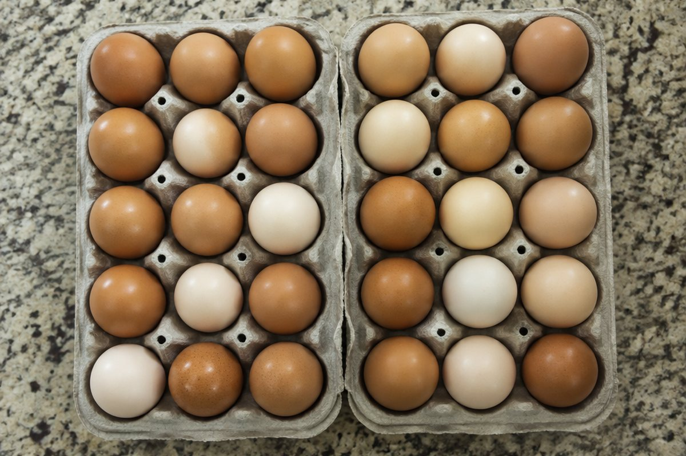

큰 수의 곱셈은 어떻게 할까?

한 상자에 달걀이 30개씩 들어 있는데 40상자가 있다면 달걀은 모두 몇 개일까요? 하나하나 세지 않아도 곱셈으로 빠르게 알 수 있어요.
곱셈은 같은 수를 여러 번 더한 것
4 + 4 + 4처럼 같은 수를 여러 번 더할 때 곱셈식 4 × 3으로 간단하게 쓸 수 있어요.
곱셈은 자리를 바꿔도 결과가 같아요. 4 × 3과 3 × 4는 둘 다 12예요.
4 + 4 + 4 = 4 × 3 = 12
(세 자리 수) × (한 자리 수)
일의 자리부터 차례로 곱하고, 곱이 10과 같거나 10보다 크면 윗자리로 올려 줘요. 이것을 올림이라고 해요.
156 × 4는 일의 자리 6 × 4 = 24에서 4를 쓰고 2를 올려요. 십의 자리 5 × 4 = 20에 올린 2를 더해 22, 2를 쓰고 2를 올려요. 백의 자리 1 × 4 = 4에 2를 더해 6이에요.
213 × 3 = 639, 156 × 4 = 624
이렇게 풀어요: (두 자리 수) × (두 자리 수)
24 × 13을 풀어 볼까요? ① 24 × 3 = 72를 먼저 구해요. ② 24 × 10 = 240을 구해요(13의 1은 십의 자리라서 10이에요).
③ 두 곱을 더하면 72 + 240 = 312예요. 곱하는 수를 일의 자리와 십의 자리로 나누어 곱한 뒤 더하는 거예요.
24 × 13 = 24 × 3 + 24 × 10 = 72 + 240 = 312
0이 있는 곱셈과 어림
30 × 40은 3 × 4 = 12를 구한 뒤, 두 수의 끝에 있는 0의 개수(2개)만큼 0을 붙이면 1200이에요.
답이 맞는지 어림해 보는 습관도 좋아요. 198 × 3은 약 200 × 3 = 600쯤 되겠다고 미리 생각해 볼 수 있어요.
30 × 40 = 1200 (3 × 4 = 12에 0 두 개)
핵심 낱말
- 곱셈
- 같은 수를 여러 번 더한 것을 간단히 나타내는 계산
- 곱
- 곱셈을 해서 나온 값
- 올림
- 한 자리의 곱이 10과 같거나 10보다 클 때 윗자리로 올려 주는 것
- 어림
- 대강 짐작해서 셈하는 것
한 줄 정리
- 곱셈은 같은 수를 여러 번 더한 것을 간단히 나타내요.
- 일의 자리부터 곱하고, 10과 같거나 10보다 크면 윗자리로 올림해요.
- 두 자리 수를 곱할 때는 일의 자리와 십의 자리로 나누어 곱한 뒤 더해요.
학교 교육과정 연결
- [4수01-04] 곱하는 수가 한 자리 수 또는 두 자리 수인 곱셈의 계산 원리를 이해하고 그 계산을 할 수 있다.
- [4수01-08] 자연수의 덧셈, 뺄셈, 곱셈, 나눗셈과 관련한 여러 가지 상황에서 어림셈을 할 수 있다.